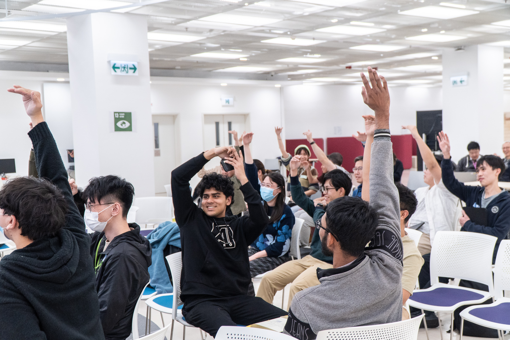
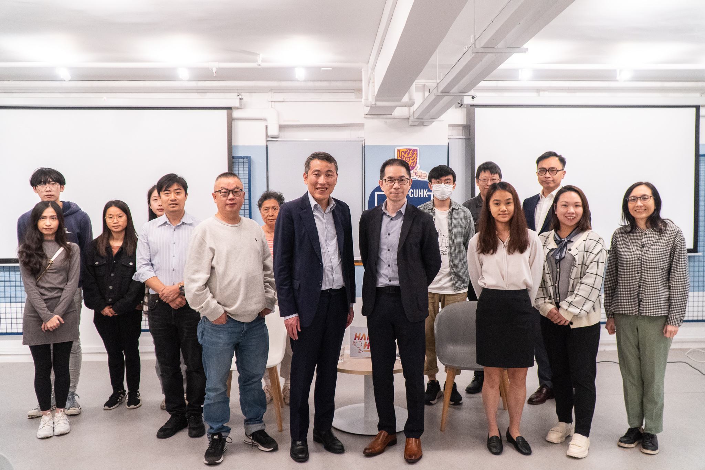

Elite Entrepreneur Sharing Series
Complementary to the formal education of EPIN, the “Elite Entrepreneur Sharing Series” offers students opportunities to not only learn from but also network with elite entrepreneurs, who could potentially become their mentors or investors.
Workshops in the series
“Working in a corporate vs. starting your own business; a scientist vs. an entrepreneur”
Hosting guests: Mr. Lau Siu Ying, Steve (keynote speaker), Mr. Yao Gang (guest speaker), Mr. Li Yiheng (guest speaker), Mr. Chiu Hoi-bun (guest Speaker)
Keynote speaker
- Lau Siu Ying, Steve
A notable CUHK alumnus, the founder and Chairman of China Fortune Holdings Limited and the founder of Eagles Fund, Steve is not only a seasoned entrepreneur but also an experienced and insightful angel investor.
Guest speakers
- Yao Gang, the founder of nextWifi;
- Li Yiheng, the founder of SoPay;
- Chiu Hoi-bun, the founder of KikiTech.
Three young entrepreneurs, Yao Gang, Li Yiheng and Chiu Hoi-bun, who are all accomplished in their own field and whose start-ups were listed under Eagles Fund’s profile, have been invited by Steve for an interactive forum session.
CUHK Entrepreneurs Alliance (CUEA) Happy Hour Entrepreneurial Talk
中大創業者聯盟 Happy Hour 創業訪談系列
Initiated by CUHK Alumni Torch Fund, EPIN teamed up with Alumni Affairs Office (AAO), CUAEA, CUHK Convocation, Centre for Entrepreneurship (CfE), Centre for Innovation and Technology (CINTEC), Entrepreneurship and Innovation Hub (InnoHub), ICARE Centre for Whole-person Development, Pi Centre, and Office of Research and Knowledge Transfer Services (ORKTS), to form CUHK Entrepreneurs Alliance (CUEA) to create a persistent wave of positive synergy in driving the growth and development of entrepreneurship in CUHK in 2020. A series of CUEA Happy Hour Entrepreneurial Talk was rolled out in the same year to promote entrepreneurship within campus and each member of CUEA takes turns in organizing the talks.
Event website
https://cuhkcuea.org/
三個減低創意的方法
創業家信奉創意，初創公司努力營造別樹一格的工作環境，希望激發創造力，締造破舊立新的企業文化。然而，創業家一些不自覺的習慣，往往成為員工創意的尅星。講者曾從事廣告創作多年，服務無數大小品牌，歸納出三招，能徹底摧毁創意，輕則讓業績倒退，重則讓企業失去競爭力。
講者：王家徹教授
創業創新副修課程聯席主任
王家徹教授現任中大商學院副院長，負責本科教育，並為EPIN創業創新副修課程聯席主任。 投身學術界之前，王教授曾任多家國際廣告集團之創作總監，並曾於本地及國際廣告大獎屢獲殊榮。
人工智能的商業模式
許多企業表示他們正在提供AI技術，許多公司表示將使用AI技術，但是公司如果不知道AI是如何真正為他們的業務增值，那麼這些努力都會白費掉！ 公司的真正需要是什麼？AI人工智能技術如何真正提供幫助，到底人工智能的商業模式是甚麼？在這個分享會，我們將討論如何開發一些AI人工智能的商業模型。
講者：陳志邦教授
中大決策科學與企業經濟學系創業專業應用副教授
行政人員工商管理碩士課程副主任
陳志邦教授創辦了提供商務顧問服務的迪思顧問有限公司與專注於技術公司前期投資的伯樂創建投資。陳教授曾任職麥肯錫國際管理顧問公司（McKinsey & Company）。此外，陳教授也曾是a-connect（中國）的聯合首席執行官，以提供專業諮詢顧問服務；他亦為EF集團公司的Englishtown.com的中國總經理，提供在線語言培訓服務。作為一個連續創業者，陳教授參與多家科技公司的項目，範疇包括數碼信號處理（DSP）的應用，綜合數碼通信，流動設備的應用，電子商務解決方案和電子學習領域。
創業新思維。新常態。新機遇。
創業路當然不簡單，遇著新冠肺炎疫情爆發更是挑戰創業者的極限。如何在經濟社會新常態下，把握機遇，成功拓展創新創業之路？就讓香港數碼港創業家總監蘇雅麗Alice，透過分享中大人創業案例，以及其在創科生態圈中所見所聞，帶出個中契機。
講者：蘇雅麗女士
香港數碼港管理有限公司 – 創業家總監
蘇雅麗女士在2011年加入香港數碼港，之前曾於香港科技園，及知名的跨國塑料，化學品和製藥公司工作。她現職數碼港，帶領團隊透過數碼港創意微型基金、數碼港培育計劃及Smart-Space共享工作間培育創科人才，提供財務支持和專業服務，協助初創加速業務發展。她擁有公共及社會管理學士學位及工程商業管理碩士學位，常擔任科技獎項及創新資助計劃的評審，包括香港資訊及通訊科技獎、阿里巴巴 Jumpstarter 2017、麻省理工學院的國際融合創新大賽2019、Technovation、大學科技初創企業資助計劃等。她是香港電腦學會的執行委員會成員及項目管理協會的項目管理專業人員。
主持：劉芷申教授
中大創業研究中心副主任
劉芷申教授現任中大商學院副教授及創業研究中心副主任。劉教授獲英屬哥倫比亞大學(UBC) 博士學位，主修組織行為學。她的研究範疇包括多元化與分化管理 (diversity and faultline management)、人際關係與信任 (interpersonal trust)、中國初創團隊建立與管理等 (start-up team success and management in greater China)。在投身學術界之前，劉教授在香港及加拿大多家財務機構工作。
連結今昔·跨代共創：由一份FYP到一間NPO
劉珈余校友Kelly中大讀書時期已經積極參與創新創業的活動，希望以新穎的方法創造具可持續性的社會效益。在書院通識教育課程，Kelly跟一班志同道合的同學組成一個促進跨代共融的社區項目，以口述歷史的方式，讓一班「後生仔」及「老友記」共同創作有關香港故事的廣播劇。畢業之後，一班創辦成員依舊懷着實踐社會創新的決心，將一個「書院通識專題研習項目(FYP)」延伸成為一個「年輕有活力的非牟利機構(NPO)*」。
*「聲昔再現」由一班香港中文大學畢業生及學生創立，旨在鼓勵不同年齡層的溝通以及共創，以社區藝術打破世代之間的隔膜，並且將上一代的故事紀錄和傳承至下一代。我們相信跨代共融是建立友善社會不可或缺的元素，「聲昔再現」作為年輕有活力的非牟利機構，將憑著創新精神，為建立跨代共融社會出一分力。
講者：劉珈余校友
聲昔再現 The Voice of History 聯合創辦人
劉珈余校友 Kelly 畢業於香港中文大學環球經濟與金融系，現從事金融監管相關工作。Kelly一直熱衷於社會創新，希望以新穎的方法創造具可持續性的社會效益。鑑於香港的文化記憶及社區歷史慢慢被遺忘，Kelly希望藉著聲昔再現讓老友記有一個平台和年輕一輩分享香港的故事，並透過跨代共創，令兩代有更多了解、交流和協作的機會，締造一個更共融的社會。
主持：王家徹教授
創業創新副修課程聯席主任
王家徹教授現任中大創業創新副修課程EPIN聯席主任，並為中大商學院市場學系市場學專業應用副教授。王教授的專業範疇包括市場傳訊及廣告。他在投身學術界前，曾任多家國際廣告集團的創作總監，並曾於本地及國際廣告大獎屢獲殊榮。
新舊交融：為百年建築注入創新元素
歷史建築除了保留香港昔日的面貌，更承載著幾代人的集體回憶，是本土文化重要的一部分。在不少人眼中，要保存這些建築似乎要捨棄經濟效益，然而1932年成立的中藥行「大和堂」活化為懷舊咖啡店的故事，為我們帶來嶄新的角度，重新定義文化保育。
大和堂咖啡店創辦人石浚鏗先生 (Henry) 將分享他創立大和堂的過程和營運心得。有興趣知道百年建築如何搖身一變為今日的特色咖啡店，達致新舊交融，就不能錯過是次分享！
講者：石浚鏗先生 (Henry)
大和堂咖啡店創辦人
於英國牛津大學修讀經濟及管理系的Henry，畢業後曾從事網上團購及地產租務的工作。發現對香港情懷及飲食文化情有獨鍾，毅然創業餐飲公司。除了活化及保育大和堂外，去年再開設外賣店Mama Mia Pizzeria。
主持：王家徹教授 (Andy)
創業創新副修課程聯席主任
王家徹教授現任中大創業創新副修課程EPIN聯席主任，並為中大商學院市場學系市場學專業應用副教授。Andy的專業範疇包括市場傳訊及廣告。他在投身學術界前，曾任多家國際廣告集團的創作總監，並曾於本地及國際廣告大獎屢獲殊榮。
由創業家到創投人：破解創業攻略
「由創業家到創投人：破解創業攻略」將為有志於創業或正在創業的人士提供寶貴的見解和啟發，幫助他們更好地掌握創業的策略和成功關鍵。
張永漢校友（Patrick）將以自身經歷教授創業者如何讓初創企業獲得成長並得到投資者的支持，講解中國市場的創業創新文化環境與前景，以及初創公司如何拓展海外市場走向國際化，讓創業者更瞭解當前市場及經濟形勢對創業的機遇和挑戰。此外，張先生將分享如何與投資者建立良好的合作關係，以及有效籌集資金的策略。
講者：張永漢校友 (Patrick)
眾為資本(ZWC Partners) 創始合夥人
作為連續成功創業家，張校友於1999年創辦UR Photo，後被上市公司中港照相集團收購。2002年在上海創辦傳智戶外媒體集團，於2007年中該公司與分眾傳媒集團（Focus Media）成功合併。Patrick畢業於香港中文大學，也是中歐國際工商學院全球CEO課程、哈佛商學院中國CEO+進階課程、清華大學經濟管理學院企業家學者項目的校友，並擔任史丹福大學的訪問學者。
主持：王家徹教授 (Andy)
創業創新副修課程聯席主任
王家徹教授現任中大創業創新副修課程EPIN聯席總監及入學及學生資助處處長，並為中大商學院市場學系市場學專業應用副教授。Andy的專業範疇包括市場傳訊及廣告。他在投身學術界前，曾任多家國際廣告集團的創作總監，並曾於本地及國際廣告大獎屢獲殊榮。
微縮光影重現昔日香港情懷
隨著社會發展，許多熟悉的風景和事物逐漸消失。有人透過相片和舊物記錄這些變遷，而吳凱俊先生（Steve）則創立了TINY微影，專注於製作香港獨特的街道、建築、店鋪、設施及車輛等情景模型，呈現香港的獨特面貌，保留屬於香港人的珍貴回憶。
這次活動由中大圖書館及創業創新副修課程合辦，將深入探討微影背後的故事和創作過程，並設有3D打印工作坊，讓大家了解可用於模型製作的3D打印技術。
讓我們一起走進微影的世界，重溫香港的歷史與文化！
講者：吳凱俊先生 (Steve)
TINY微影創辦人
吳凱俊先生（Steve）因興趣使然，大學時期開始在網上售賣模型車，繼而決定畢業後投身玩具模型行業。憑藉多年累積的經驗和創意，Steve於2014年創立TINY微影，懷著對香港的深厚情懷，以打造香港獨特的人、車、景的模型而聞名。現時，全港共有15間TINY微影專門店，並設有超過400個銷售據點。
CUHK Data Hack
EPIN teamed up with CUHK Library and other fellow CUHK units to co-organize a Hackathon with the theme of “Data Solutions for Social Good”. The hackathon aims to promote innovation skills, including data and digital competency and enhance multi-disciplinary and multi-dimensional collaboration among CUHK students and staff.
Main Theme: Data Solutions for Social Good
With reference to the following Sustainable Development Goals by United Nations:
- Good Health and Well-being
- Industry, Innovation and Infrastructure
- Sustainable Cities and Communities
- Climate Action
Description
- Within 48 hours, participants have to showcase and demonstrate their digital skills and ideas on “Data Solutions for Social Good” with reference to UN’s SDGs. Participants will have a group presentation of their solutions in Day 3.
- The winning presentations will be awarded various prizes.
Eligibility and registration
We welcome CUHK students and staff to join in teams or as individuals. To join in teams, each group should have 3 to 5 members and should comprise of students from both faculty groups 1 and 2:
Group 1: Faculty of Arts, Faculty of Business Administration, Faculty of Education, Faculty of Law, Faculty of Social Science
Group 2: Faculty of Engineering, Faculty of Medicine, Faculty of Science
Organizing Committee
- Data Science and Policy Studies Programme, CUHK (Dr. Kwong-cheong WONG)
- Centre for Learning Enhancement And Research, CUHK (Mr. Wik CHAN)
- Prof. Bernard Suen
- Department of Computer Science and Engineering, CUHK (Dr. Michael Ruisi YU)
- Entrepreneurship and Innovation (EPIN) Minor Programme, CUHK (Ms. Joyce LEUNG)
- CUHK Library (Ms. Lily KO, Ms. Carol KONG & Ms. Kitty SIU)
CUHK Webinar: Research, Innovation and Entrepreneurship
Have you ever though about translating your innovative ideas into action and starting your own business? In the webinar, three young CUHK alumni entrepreneurs will share their career ambitions and how they have coped with different challenges when establishing their start-ups. Join us and get ready to embark on your entrepreneurial journey!
Speakers
- Mr. Eric Kuo, Co-founder of R-Guardian
- Mr. Tong Song, Co-founder of NEX Team
- Ms. Winnie Lee, Co-founder of Spread-it
Moderator
- Prof. Andy Wong, Co-director of EPIN, CUHK
Co-organisers
- Alumni Affairs Office, CUHK
- EPIN, CUHK
- Office of Academic Links, CUHK
Others

